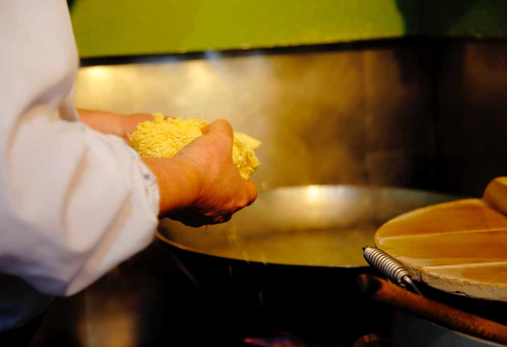

Simply put, ramen is a Japanese noodle soup, with a combination of a rich flavoured broth, one of a variety of types of noodle and a selection of meats or vegetables, often topped with a boiled egg. In Japan ramen is considered a fast food, with many small restaurants and street vendors offering a warming bowl of this delicious soup.
We begin our story a long time ago so fasten your seat belts for a whistle stop tour of ramen history! It starts in 1800s China, which is considered to be the birthplace of all things ramen. The idea of noodles in a soupy broth travelled with Chinese immigrants in the late 19th or early 20th Century to Japan after the Meijiichin [Meiji Restoration] in 1868. On arriving in Japan Chinatowns sprung up like the one in Yokohama - a busy port town that helped to spread the popularity of ramen throughout Japan.
Today ramen is a global food, with ramen shops and bars across the world celebrating this awesome comfort food. In Japan alone there are 24,000 ramen shops, with 5,000 just in Tokyo! That’s a trip we want to do!
Mix 700ml chicken stock, 3 halved garlic cloves, 4 tbsp soy sauce, 1 tsp Worcestershire sauce, a sliced thumb-sized piece of ginger, ½ tsp Chinese five spice, pinch of chilli powder and 300ml water in a stockpot or large saucepan, bring to the boil, then reduce the heat and simmer for 5 mins.
Taste the stock – add 1 tsp white sugar or a little more soy sauce to make it sweeter or saltier to your liking.
Cook 375g ramen noodles following the pack instructions, then drain and set aside.
Slice 400g cooked pork or chicken, fry in 2 tsp sesame oil until just starting to brown, then set aside.
Divide the noodles between four bowls. Top each with a quarter of the meat, 25g spinach, 1 tbsp sweetcorn and two boiled egg halves each.
Strain the stock into a clean pan, then bring to the boil once again.
Divide the stock between the bowls, then sprinkle over 1 shredded nori sheet, sliced spring onions or shallots and a sprinkle of sesame seeds. Allow the spinach to wilt slightly before serving.